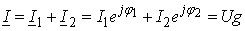
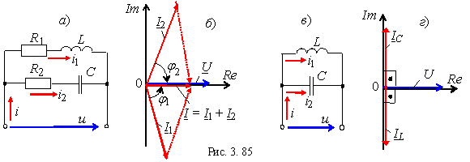

Построим векторные диаграммы токов ветвей и тока на входе реальнго
(рис. 3.85, а) и идеального (рис. 3.85, в) колебательных контуров для
режима РТ (рис. 2.85). Ток I1 в
первой ветви отстаёт от напряжения по фазе на угол φ1,
а ток I2 во второй
ветви его опережает по фазе на угол φ2 (рис.
3.85, б).
Комплекс тока на входе реального контура для режима РТ
.
Его модуль, как правило, при РТ меньше модулей токов ветвей I1 и I2 (рис. 2.85, б). По определению резонансного режима ток I контура должен совпадать по фазе с напряжением U. Как отмечалось, для идеального контура ток на его входе равен нулю (рис. 3.85, г).
